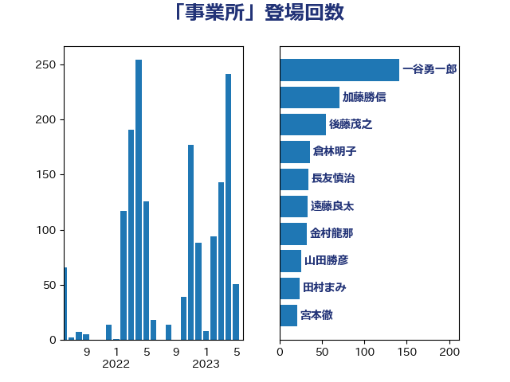

単語「事業所」

| 一谷勇一郎 | 日本維新の会 | 141 回 |
| 加藤勝信 | 自由民主党 | 71 回 |
| 後藤茂之 | 自由民主党 | 55 回 |
| 倉林明子 | 日本共産党 | 36 回 |
| 長友慎治 | 国民民主党 | 34 回 |
| 遠藤良太 | 日本維新の会 | 33 回 |
| 金村龍那 | 日本維新の会 | 32 回 |
| 山田勝彦 | 立憲民主党 | 26 回 |
| 田村まみ | 国民民主党 | 24 回 |
| 宮本徹 | 日本共産党 | 21 回 |
| 川田龍平 | 立憲民主党 | 19 回 |
| 田中健 | 国民民主党 | 17 回 |
| 天畠大輔 | れいわ新選組 | 17 回 |
| 山井和則 | 立憲民主党 | 15 回 |
| 芳賀道也 | 国民民主党 | 14 回 |
| 木村英子 | れいわ新選組 | 14 回 |
| 岩渕友 | 日本共産党 | 14 回 |
| 足立康史 | 日本維新の会 | 13 回 |
| 田村憲久 | 自由民主党 | 13 回 |
| 末次精一 | 立憲民主党 | 13 回 |
| 山本香苗 | 公明党 | 12 回 |
| 上田清司 | 国民民主党 | 11 回 |
| 舩後靖彦 | れいわ新選組 | 10 回 |
| 松野明美 | 日本維新の会 | 10 回 |
| 東徹 | 日本維新の会 | 10 回 |
| 岸田文雄 | 自由民主党 | 10 回 |
| 今井絵理子 | 自由民主党 | 10 回 |
| 井上哲士 | 日本共産党 | 10 回 |
| 鳩山二郎 | 自由民主党 | 9 回 |
| 萩生田光一 | 自由民主党 | 8 回 |
| 宮本岳志 | 日本共産党 | 8 回 |
| 仁木博文 | 無所属 | 8 回 |
| 金子道仁 | 日本維新の会 | 7 回 |
| 田村貴昭 | 日本共産党 | 7 回 |
| 杉尾秀哉 | 立憲民主党 | 7 回 |
| 高木かおり | 日本維新の会 | 6 回 |
| 西田実仁 | 公明党 | 6 回 |
| 田畑裕明 | 自由民主党 | 6 回 |
| 田村智子 | 日本共産党 | 6 回 |
| 猪瀬直樹 | 日本維新の会 | 6 回 |
| 森田俊和 | 立憲民主党 | 6 回 |
| 中島克仁 | 立憲民主党 | 6 回 |
| 野間健 | 立憲民主党 | 5 回 |
| 西村康稔 | 自由民主党 | 5 回 |
| 窪田哲也 | 公明党 | 5 回 |
| 石垣のりこ | 立憲民主党 | 5 回 |
| 瀬戸隆一 | 自由民主党 | 5 回 |
| 早稲田ゆき | 立憲民主党 | 5 回 |
| 川合孝典 | 国民民主党 | 5 回 |
| 小川淳也 | 立憲民主党 | 5 回 |
| 小倉將信 | 自由民主党 | 5 回 |
| 勝目康 | 自由民主党 | 5 回 |
| 高橋千鶴子 | 日本共産党 | 4 回 |
| 葉梨康弘 | 自由民主党 | 4 回 |
| 漆間譲司 | 日本維新の会 | 4 回 |
| 斉藤鉄夫 | 公明党 | 4 回 |
| 岩谷良平 | 日本維新の会 | 4 回 |
| 山際大志郎 | 自由民主党 | 4 回 |
| 山本博司 | 公明党 | 4 回 |
| 大島敦 | 立憲民主党 | 4 回 |
| 塩村あやか | 立憲民主党 | 4 回 |
| 堤かなめ | 立憲民主党 | 4 回 |
| 友納理緒 | 自由民主党 | 4 回 |
| 佐藤啓 | 自由民主党 | 4 回 |
| 井坂信彦 | 立憲民主党 | 4 回 |
| 下野六太 | 公明党 | 4 回 |
| 鈴木義弘 | 国民民主党 | 3 回 |
| 赤羽一嘉 | 公明党 | 3 回 |
| 角田秀穂 | 公明党 | 3 回 |
| 船橋利実 | 自由民主党 | 3 回 |
| 白石洋一 | 立憲民主党 | 3 回 |
| 畦元将吾 | 自由民主党 | 3 回 |
| 深澤陽一 | 自由民主党 | 3 回 |
| 河野太郎 | 自由民主党 | 3 回 |
| 梅村聡 | 日本維新の会 | 3 回 |
| 梅村みずほ | 日本維新の会 | 3 回 |
| 村田享子 | 立憲民主党 | 3 回 |
| 打越さく良 | 立憲民主党 | 3 回 |
| 徳永エリ | 立憲民主党 | 3 回 |
| 岸真紀子 | 立憲民主党 | 3 回 |
| 小泉進次郎 | 自由民主党 | 3 回 |
| 塩川鉄也 | 日本共産党 | 3 回 |
| 塩崎彰久 | 自由民主党 | 3 回 |
| 吉川赳 | 無所属 | 3 回 |
| 佐々木さやか | 公明党 | 3 回 |
| 高野光二郎 | 自由民主党 | 2 回 |
| 高橋光男 | 公明党 | 2 回 |
| 阿部司 | 日本維新の会 | 2 回 |
| 長妻昭 | 立憲民主党 | 2 回 |
| 金城泰邦 | 公明党 | 2 回 |
| 西岡秀子 | 国民民主党 | 2 回 |
| 藤田文武 | 日本維新の会 | 2 回 |
| 笠井亮 | 日本共産党 | 2 回 |
| 竹詰仁 | 国民民主党 | 2 回 |
| 空本誠喜 | 日本維新の会 | 2 回 |
| 福重隆浩 | 公明党 | 2 回 |
| 福島伸享 | 無所属 | 2 回 |
| 礒崎哲史 | 国民民主党 | 2 回 |
| 石川香織 | 立憲民主党 | 2 回 |
| 田島麻衣子 | 立憲民主党 | 2 回 |
| 玉木雄一郎 | 国民民主党 | 2 回 |
| 湯原俊二 | 立憲民主党 | 2 回 |
| 清水貴之 | 日本維新の会 | 2 回 |
| 浜田聡 | NHK党 | 2 回 |
| 横山信一 | 公明党 | 2 回 |
| 森本真治 | 立憲民主党 | 2 回 |
| 梅谷守 | 立憲民主党 | 2 回 |
| 日下正喜 | 公明党 | 2 回 |
| 宮本周司 | 自由民主党 | 2 回 |
| 古賀篤 | 自由民主党 | 2 回 |
| 住吉寛紀 | 日本維新の会 | 2 回 |
| 伊佐進一 | 公明党 | 2 回 |
| ながえ孝子 | 無所属 | 2 回 |
| たがや亮 | れいわ新選組 | 2 回 |
| 高階恵美子 | 自由民主党 | 1 回 |
| 高良鉄美 | 無所属 | 1 回 |
| 高木啓 | 自由民主党 | 1 回 |
| 長谷川英晴 | 自由民主党 | 1 回 |
| 長浜博行 | 無所属 | 1 回 |
| 長峯誠 | 自由民主党 | 1 回 |
| 鈴木俊一 | 自由民主党 | 1 回 |
| 金子恵美 | 立憲民主党 | 1 回 |
| 金子恭之 | 自由民主党 | 1 回 |
| 野田国義 | 立憲民主党 | 1 回 |
| 野村哲郎 | 自由民主党 | 1 回 |
| 西銘恒三郎 | 自由民主党 | 1 回 |
| 西田昌司 | 自由民主党 | 1 回 |
| 藤巻健太 | 日本維新の会 | 1 回 |
| 舟山康江 | 国民民主党 | 1 回 |
| 紙智子 | 日本共産党 | 1 回 |
| 竹谷とし子 | 公明党 | 1 回 |
| 竹内真二 | 公明党 | 1 回 |
| 穂坂泰 | 自由民主党 | 1 回 |
| 神谷政幸 | 自由民主党 | 1 回 |
| 石田昌宏 | 自由民主党 | 1 回 |
| 石井正弘 | 自由民主党 | 1 回 |
| 石井啓一 | 公明党 | 1 回 |
| 牧島かれん | 自由民主党 | 1 回 |
| 滝波宏文 | 自由民主党 | 1 回 |
| 浦野靖人 | 日本維新の会 | 1 回 |
| 浜口誠 | 国民民主党 | 1 回 |
| 池下卓 | 日本維新の会 | 1 回 |
| 梶山弘志 | 自由民主党 | 1 回 |
| 柚木道義 | 立憲民主党 | 1 回 |
| 松本剛明 | 自由民主党 | 1 回 |
| 松島みどり | 自由民主党 | 1 回 |
| 本田顕子 | 自由民主党 | 1 回 |
| 木村次郎 | 自由民主党 | 1 回 |
| 新谷正義 | 自由民主党 | 1 回 |
| 庄子賢一 | 公明党 | 1 回 |
| 市村浩一郎 | 日本維新の会 | 1 回 |
| 山添拓 | 日本共産党 | 1 回 |
| 山口晋 | 自由民主党 | 1 回 |
| 山口壯 | 自由民主党 | 1 回 |
| 尾身朝子 | 自由民主党 | 1 回 |
| 小林鷹之 | 自由民主党 | 1 回 |
| 寺田学 | 立憲民主党 | 1 回 |
| 室井邦彦 | 日本維新の会 | 1 回 |
| 大岡敏孝 | 自由民主党 | 1 回 |
| 堂込麻紀子 | 無所属 | 1 回 |
| 城井崇 | 立憲民主党 | 1 回 |
| 坂本祐之輔 | 立憲民主党 | 1 回 |
| 土屋品子 | 自由民主党 | 1 回 |
| 國重徹 | 公明党 | 1 回 |
| 吉田統彦 | 立憲民主党 | 1 回 |
| 吉田とも代 | 日本維新の会 | 1 回 |
| 吉川元 | 立憲民主党 | 1 回 |
| 加藤竜祥 | 自由民主党 | 1 回 |
| 佐藤英道 | 公明党 | 1 回 |
| 伊藤孝恵 | 国民民主党 | 1 回 |
| 中野洋昌 | 公明党 | 1 回 |
| 中川康洋 | 公明党 | 1 回 |
| 中司宏 | 日本維新の会 | 1 回 |